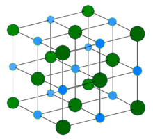

Descubriendo el enlace iónico
Formación del enlace iónico
Hemos visto que algunos átomos se vuelven más estables al ganar o perder un electrón o varios electrones. Cuando lo hacen, los átomos forman iones. Cuando un átomo pierde un electrón y otro átomo gana un electrón, el proceso se conoce como transferencia de electrones. Debido a la transferencia de electrones se produce una atracción electrostática entre los iones de distinto signo, es decir, uno fuertemente electropositivo y otro fuertemente electronegativo. Un ejemplo es la unión entre el sodio y el cloro.
Veamos el siguiente vídeo:
Respondemos a estas preguntas:
- ¿A qué grupo de la tabla periódica pertenece el sodio? ¿Cuántos electrones de valencia tiene?
- ¿A qué grupo de la tabla periódica pertenece el cloro? ¿Cuántos electrones de valencia tiene?
- ¿Podemos decir qué sucede con los electrones de valencia del sodio y del cloro?
- ¿Qué tipo de ión forma el sodio? ¿Por qué?
- ¿Qué tipo de ión forma el cloro? ¿Por qué?
- ¿Qué tipo de atracción se produce entre estos iones?
¿Que tipo de estructura forma un compuesto iónico?
Un compuesto iónico forma un cristal iónico, formado por una red de iones que se unen por su atracción electrostática. En el caso del NaCl (sal de mesa) sería:

¿Y que propiedades tienen los compuestos iónicos?
En general, presentan las siguientes propiedades:
- Son sólidos cristalinos a temperatura ambiente.
- Tienen elevados puntos de fusión y ebullición.
- Presentan gran dureza o resistencia a ser rayados.
- Son frágiles y quebradizos.
- aSon malos conductores de la electricidad en estado sólido pero se vuelven buenos conductores de la electricidad cuando están fundidos o en disolución.
Pero ¿Por qué tienen estas propiedades? Seguro que podemos justificarlo en la siguiente actividad.
Relaciona: propiedades y justificación
En grupos de cuatro, vamos a relacionar las propiedades que hemos visto de los compuestos iónicos con su justificación.
¡Veamos qué equipo lo hace mejor¡
En grupos de cuatro, vamos a relacionar las propiedades que hemos visto de los compuestos iónicos con su justificación.
\n¡Veamos qué equipo lo hace mejor¡
","showMinimize":false,"itinerary":{"showClue":false,"clueGame":"","percentageClue":40,"showCodeAccess":false,"codeAccess":"","messageCodeAccess":""},"cardsGame":[{"url":"","x":0.34863504870184536,"y":0.567816109492861,"author":"","alt":"","audio":"","color":"#000000","backcolor":"#fefdda","eText":"Son%20s%C3%B3lidos%20cristalinos%20a%20temperatura%20ambiente.","urlBk":"","xBk":0,"yBk":0,"authorBk":"","altBk":"","audioBk":"","colorBk":"#000000","backcolorBk":"#79fbc4","eTextBk":"Todos%20los%20cambios%20necesarios%20para%20romper%20la%20distribuci%C3%B3n%20de%20los%20iones%20requieren%20gran%20cantidad%20de%20energ%C3%ADa."},{"url":"","x":0,"y":0,"author":"","alt":"","audio":"","color":"#000000","backcolor":"#fefdda","eText":"Tienen%20elevados%20puntos%20de%20fusi%C3%B3n%20y%20ebullici%C3%B3n.","urlBk":"","xBk":0,"yBk":0,"authorBk":"","altBk":"","audioBk":"","colorBk":"#000000","backcolorBk":"#79fbc4","eTextBk":"Para%20rayarlos%20hay%20que%20romper%20los%20fuertes%20enlaces%20entre%20los%20iones."},{"url":"","x":0,"y":0,"author":"","alt":"","audio":"","color":"#000000","backcolor":"#fefdda","eText":"Presentan%20gran%20dureza%20o%20resistencia%20a%20ser%20rayados.","urlBk":"","xBk":0,"yBk":0,"authorBk":"","altBk":"","audioBk":"","colorBk":"#000000","backcolorBk":"#79fbc4","eTextBk":"Cuando%20el%20s%C3%B3lido%20se%20funde%20o%20se%20disuelve%2C%20deja%20iones%20en%20libertad%20que%20pueden%20transportar%20la%20corriente%20el%C3%A9ctrica."},{"url":"","x":0,"y":0,"author":"","alt":"","audio":"","color":"#000000","backcolor":"#fefdda","eText":"Son%20fr%C3%A1giles%20y%20quebradizos.","urlBk":"","xBk":0,"yBk":0,"authorBk":"","altBk":"","audioBk":"","colorBk":"#000000","backcolorBk":"#79fbc4","eTextBk":"Son%20sustancias%20cristalinas%20en%20las%20que%20cada%20ion%20est%C3%A1%20rodeado%20por%20otros%20iones%20de%20carga%20opuesta%20que%20forman%20una%20red%20cristalina."},{"url":"","x":0,"y":0,"author":"","alt":"","audio":"","color":"#000000","backcolor":"#fefdda","eText":"Son%20buenos%20conductores%20de%20la%20electricidad%20cuando%20est%C3%A1n%20fundidos%20o%20en%20disoluci%C3%B3n.","urlBk":"","xBk":0,"yBk":0,"authorBk":"","altBk":"","audioBk":"","colorBk":"#000000","backcolorBk":"#79fbc4","eTextBk":"Las%20mol%C3%A9culas%20de%20agua%20envuelven%20los%20iones%20y%20consiguen%20liberarlos%20de%20la%20red%20cristalina."},{"url":"","x":0,"y":0,"author":"","alt":"","audio":"","color":"#000000","backcolor":"#fefdda","eText":"Son%20malos%20conductores%20de%20la%20electricidad%20en%20estado%20s%C3%B3lido.","urlBk":"","xBk":0,"yBk":0,"authorBk":"","altBk":"","audioBk":"","colorBk":"#000000","backcolorBk":"#79fbc4","eTextBk":"Cuando%20se%20golpean%20con%20suficiente%20fuerza%2C%20los%20iones%20del%20mismo%20signo%20quedan%20enfrentados%20y%20los%20s%C3%B3lidos%20se%20rompen."},{"url":"","x":0,"y":0,"author":"","alt":"","audio":"","color":"#000000","backcolor":"#fefdda","eText":"La%20mayor%C3%ADa%20son%20muy%20solubles%20en%20agua.","urlBk":"","xBk":0,"yBk":0,"authorBk":"","altBk":"","audioBk":"","colorBk":"#000000","backcolorBk":"#79fbc4","eTextBk":"Los%20electrones%20que%20intervienen%20en%20el%20enlace%20est%C3%A1n%20situados%20en%20los%20iones%2C%20sin%20poder%20moverse%20dentro%20del%20cristal."}],"isScorm":0,"textButtonScorm":"Guardar la puntuación","repeatActivity":false,"textAfter":"","version":1.3,"percentajeCards":100,"type":1,"showSolution":true,"timeShowSolution":3,"time":3,"evaluation":false,"evaluationID":"","id":"2025215232548-60","msgs":{"msgSubmit":"Enviar","msgClue":"¡Genial! La pista es:","msgCodeAccess":"Código de acceso","msgPlayStart":"Pulse aquí para jugar","msgScore":"Puntuación","msgErrors":"Errores","msgHits":"Aciertos","msgMinimize":"Minimizar","msgMaximize":"Maximizar","msgFullScreen":"Pantalla Completa","msgExitFullScreen":"Salir del modo pantalla completa","msgNoImage":"Pregunta sin imágenes","msgEndGameScore":"Antes de guardar la puntuación comience la partida.","msgScoreScorm":"La puntuación no se puede guardar porque esta página no forma parte de un paquete SCORM.","msgOnlySaveScore":"¡Sólo puede guardar la puntuación una vez!","msgOnlySave":"Sólo puede guardar una vez","msgInformation":"Información","msgYouScore":"Su puntuación","msgAuthor":"Autoría","msgOnlySaveAuto":"Su puntuación se guardará después de cada pregunta. Sólo puede jugar una vez.","msgSaveAuto":"Su puntuación se guardará automáticamente después de cada pregunta.","msgSeveralScore":"Puede guardar la puntuación tantas veces como quiera","msgYouLastScore":"La última puntuación guardada es","msgActityComply":"Ya ha realizado esta actividad.","msgPlaySeveralTimes":"Puede realizar esta actividad cuantas veces quiera","msgClose":"Cerrar","msgAudio":"Audio","msgNumQuestions":"Número de tarjetas","msgTryAgain":"Necesita al menos un %s% de respuestas correctas para conseguir la información. Vuelva a intentarlo.","msgEndGameM":"Has completado el juego. Tu puntuación es %s.","msgUncompletedActivity":"Actividad no completada","msgSuccessfulActivity":"Actividad superada. Puntuación: %s","msgUnsuccessfulActivity":"Actividad no superada. Puntuación: %s","msgTypeGame":"Relaciona","msgCheck":"Comprobar","msgRestart":"Reiniciar"}}Detective químico
Tenemos tres sustancias A, B, C y necesitamos saber cuál de ellas tiene un enlace iónico. Analizamos sus propiedades en el laboratorio y encontramos lo siguiente:
| Sustancia | Conductividad eléctrica | Punto de fusión | Dureza | Solubilidad en agua |
| A | No conduce la electricidad | Muy alto | Muy dura | Insoluble |
| B | Sí conduce la electricidad en estado sólido | Muy alto | ----------- | Insoluble |
| C | No conduce electricidad en estado sólido | Elevado | Alta | Muy soluble |
Analizamos los datos y decidimos cuál es la sustancia iónica y damos los argumentos que nos han llevado a nuestra decisión.
La presencia del enlace iónico en nuestra vida cotidiana

Los enlaces iónicos están muy presentes en nuestra vida. Hemos visto el ejemplo de la sal común, NaCl.
Muchos de los minerales que forman la corteza terrestre están compuestos por enlaces iónicos. Por ejemplo, el cloruro de sodio (NaCl), o sal de mesa, del que ya hemos hablado. Es un compuesto iónico que encontramos no solo en la cocina, sino también en grandes depósitos naturales. Esta sal es esencial para nuestra dieta, ya que el sodio es un mineral necesario para el funcionamiento adecuado de nuestros nervios y músculos.
Otro ejemplo lo tenemos en las bebidas energéticas usadas comúnmente en el deporte. Los electrólitos son iones positivos y negativos que ayudan a controlar el movimiento del agua en todo el cuerpo, ayudando a las células a la eliminación de desechos y al transporte de nutrientes dentro de ellas. Se pueden encontrar a los iones sodio, potasio, cloro, calcio y magnesio. Dichos iones son necesarios para la conducción de impulsos nerviosos, la contracción muscular y el equilibrio de agua.
Vamos a hacer una búsqueda bibliográfica de la importancia de estos iones en el cuerpo humano y en qué alimentos podemos hallarlos. Completamos la tabla siguiendo el ejemplo del ión sodio.
| Ión | Uso | Alimento en que se encuentra |
| Na+ | Regula los niveles de agua y la presión arterial, así como los procesos neurológicos. Su deficiencia puede provocar calambres musculares, mareo y pérdida de apetito. | Sal |
| K+ | ||
| Cl- | ||
| Mg++ | ||
| Ca++ |
Reflexionamos y Evaluamos
Hemos avanzado ya bastante en nuestra situación de aprendizaje. Antes de seguir conviene que reflexionemos sobre nuestro aprendizaje y aprovechemos también para completar nuestro portafolio.
Completamos la plantilla de reflexión y la añadimos a nuestro portafolio.
Reflexión sobre mis aprendizajes (actividad metacognitiva). Descarga de documento en formato editable odt y en pdf.